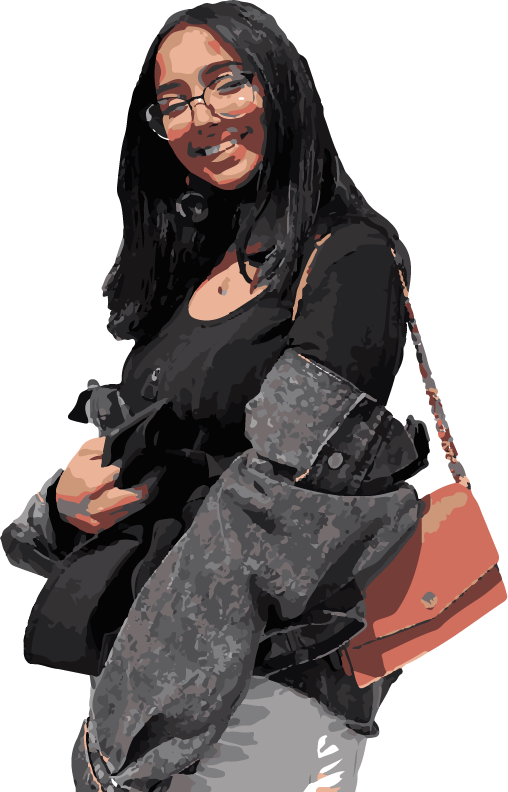

Every Tuesday and Thursday at 8:30 in the morning, I walk along the Highline, a twisty path between the residential
colleges at NYU Abu Dhabi, to get to my Communications Lab class.
Every Tuesday and Thursday, on that walk, I see happy faces, lovely cats and kittens, beautiful skies,
chirping birds, and plenty of other reasons to smile.
In this film, I invite you to accompany me on one such walk – I hope it gets as many smiles out of you as filming it got out me :)
Hi! My name's Sarah. People close to me call me Sare, the nickname my young sister gave to me three years ago. I am the person behind the camera – I give a sneaky wave at the end though. I am a student at NYU Abu Dhabi and, in this short "vlog," I document a snippet of what I see when I am walking back to my residential building from class.
This is Moo Moo, a cat I have grown so fond of in the last three years. We break bread together at the dining hall – as in she shows up uninvited, jumps on my table, and nibbles on my food. We chatter and gossip together – as in I whine about frustrating human stuff that her cat brain can't understand. She ditches me all the time for food o other people, like you see in the video. I still love her though and seeing her on my walks on campus make me happy.
It is very hard to have a bad morning if you are greeted with a warm smile and an affectionate wave. I owe all my happy mornings to the Public Safety officers in the Art Center whose gentle smiles and happy demanor never fail to energize me for the rest of the day.
This is Mike, or Michael Ttappous, the residential college director of some of the residential colleges. Mike, just like the multiple wonderful people I come into contact with every day at NYUAD, stopped to exchange a few words with me before going about his day.
Made with lots of 💓 by sare